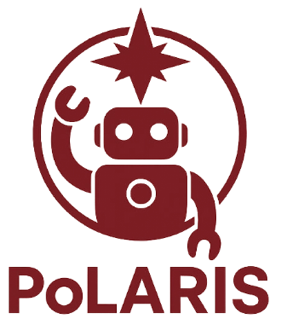
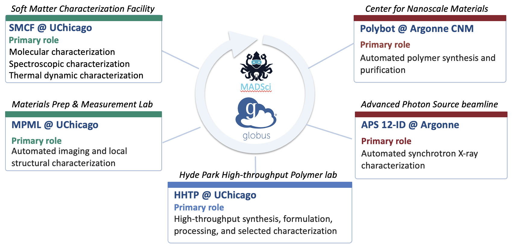
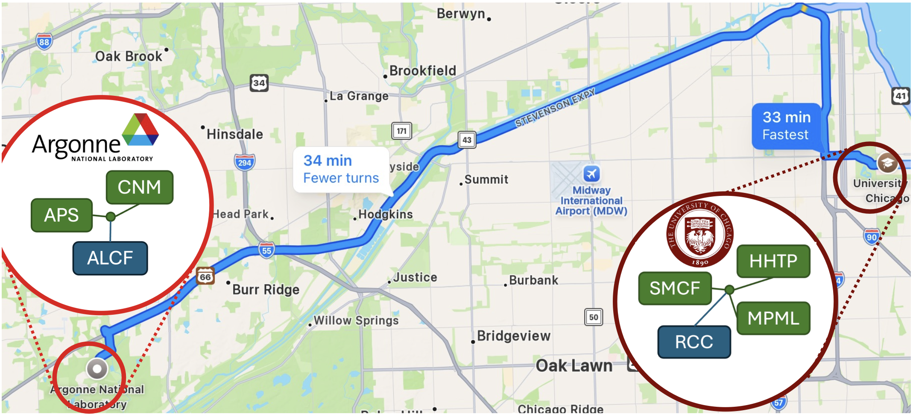

Polymer Laboratory for AI, Robotics, Informatics, and Standards
NSF Award 2607613 – PCL-Test Bed
About
PoLARIS is the nation's first programmable cloud laboratory (PCL) node dedicated to polymer science. We unify 20+ autonomous stations into a single programmable environment enabling AI-driven polymer synthesis, processing, and characterization at 100–300 experiments/day through cloud interfaces.

Leadership
| Name | Responsibility |
|---|---|
| Ian Foster | Infrastructure & Networking |
| Jie Xu | Instrumentation & Automation |
| Stuart Rowan | Science Driver & User Engagement |
| Yuxin Chen | AI & Workflow |
| Kyle Chard | Data & Software |
Location

University of Chicago and Argonne National Laboratory, Chicago, Illinois
News
- Remotely operated robotic lab receives $20 million from National Science Foundation (UChicago PME)
- NSF announces $400M investment in new national network of AI-driven programmable cloud laboratories (NSF)